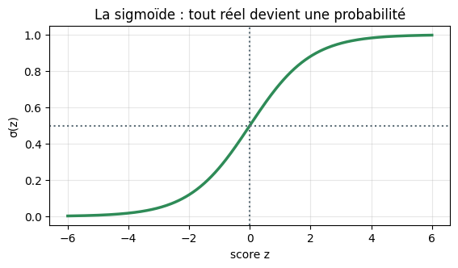
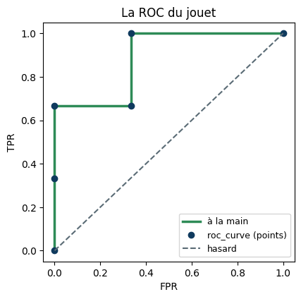
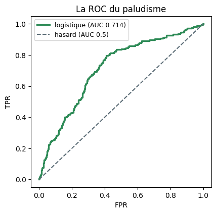

L’arbre de la Séance 3 et la régression linéaire de la Séance 5 ont tous deux échoué sur le paludisme (11,8 % de positifs) — du moins selon l’accuracy.
Classifier pour de vrai : régression logistique, seuil et métriques honnêtes
Dr. El Hadji Bassirou TOURÉ · DMI · FST · UCAD
L’arbre de la Séance 3 et la régression linéaire de la Séance 5 ont tous deux échoué sur le paludisme (\(11{,}8\,\%\) de positifs) — du moins selon l’accuracy. Ce TP reconstruit à la main : la sigmoïde, la log-loss, la matrice de confusion, precision/recall/F1, le balayage du seuil, la courbe ROC point par point et l’AUC par comptage de paires — puis confronte chaque calcul à scikit-learn, et réhabilite le « modèle inutile ».
Durée estimée : 1h30. Exécuter les cellules dans l’ordre, de haut en bas.
Partie 0 — Mise en place
import numpy as npimport pandas as pdimport matplotlib.pyplot as pltnp.set_printoptions(precision=4, suppress=True)pd.set_option("display.precision", 3)print("Outils prêts. NumPy", np.__version__, "· pandas", pd.__version__)
# La cible du jour : le paludisme — une classe rareprint(df["paludisme"].value_counts())print("\npart de positifs :", round(df["paludisme"].mean(), 3))print("baseline « personne n'a le paludisme » :", round(1- df["paludisme"].mean(), 4))
paludisme
0 8824
1 1176
Name: count, dtype: int64
part de positifs : 0.118
baseline « personne n'a le paludisme » : 0.8824
Lecture.\(1\,176\) malades sur \(10\,000\) : prédire « jamais malade » garantit déjà \(88{,}2\,\%\) d’accuracy. C’est la barre — et le piège — de toute la séance.
Partie 1 — La sigmoïde : du score à la probabilité
La régression logistique garde le score linéaire \(z = b + \mathbf{w}\cdot\mathbf{x}\) de la Séance 5 et le passe dans la sigmoïde\(\sigma(z) = 1/(1+e^{-z})\), qui l’écrase dans \(]0,1[\).
# La sigmoïde en une ligne — et ses valeurs remarquablesdef sigmoide(z):return1/ (1+ np.exp(-z))for z in [-4, -2, 0, 2, 4]:print(f"sigma({z:+d}) = {sigmoide(z):.4f}")
# La courbe complètez = np.linspace(-6, 6, 300)plt.figure(figsize=(6.4, 3.2))plt.plot(z, sigmoide(z), color="#2E8B57", lw=2.5)plt.axhline(0.5, color="#5A6B75", ls=":"); plt.axvline(0, color="#5A6B75", ls=":")plt.xlabel("score z"); plt.ylabel("σ(z)")plt.title("La sigmoïde : tout réel devient une probabilité"); plt.grid(alpha=0.3)plt.show()

Lecture.\(\sigma(0) = 0{,}5\) (l’indécision), \(\sigma(-z) = 1 - \sigma(z)\) (la symétrie), et quatre unités de score suffisent pour passer de \(0{,}12\) à \(0{,}88\). La sortie ne quitte jamais \(]0,1[\) — exactement ce qui manquait à la droite nue de la Séance 5.
Exercice. Calculer \(\sigma(1)\) et \(\sigma(-1)\) avec la fonction sigmoide, et vérifier numériquement que leur somme vaut \(1\).
# sigma(1), sigma(-1), et la vérification de la symétrie
Partie 2 — La régression logistique sur le paludisme
Le protocole habituel : split stratifié (la classe est rare, chaque moitié doit en garder la même part), Pipeline avec standardisation (la log-loss s’apprend par descente de gradient — Séance 5), puis LogisticRegression.
# Deux sorties bien distinctes : la probabilité, puis la décisionproba = modele.predict_proba(X_test)[:, 1]y_pred = modele.predict(X_test) # seuil 0,5 impliciteprint("probabilités : min =", proba.min().round(3), "· max =", proba.max().round(3))print("positifs prédits au seuil 0,5 :", int(y_pred.sum()), "sur", len(y_pred))
probabilités : min = 0.034 · max = 0.286
positifs prédits au seuil 0,5 : 0 sur 2000
# Les poids appris (variables standardisées : comparables entre eux)logreg = modele.named_steps["logisticregression"]print(pd.Series(logreg.coef_[0], index=colonnes).round(3))print("intercept :", round(logreg.intercept_[0], 3))
age 0.020
glycemie -0.103
hemoglobine 0.044
fievre 0.122
saison 0.750
dtype: float64
intercept : -2.238
Lecture. Maximum des probabilités : \(0{,}286\) — au seuil \(0{,}5\), zéro alerte. Les poids racontent pourquoi : seule la saison pèse vraiment (\(+0{,}75\)), la fièvre un peu (\(+0{,}12\)), et l’intercept très négatif (\(-2{,}24\)) encode la rareté de la maladie. Le modèle est prudent par construction — reste à savoir s’il est informatif.
# Le score z et la probabilité d'une patiente, terme à terme — à la mainx0_brut = X_test.iloc[[0]]x0_std = modele.named_steps["standardscaler"].transform(x0_brut)[0]z0 = logreg.intercept_[0] + np.dot(logreg.coef_[0], x0_std)print("patiente :", x0_brut.values[0], "| réalité y =", y_test.iloc[0])print("x standardisé :", x0_std.round(3))print("z =", round(z0, 3), "-> sigma(z) =", round(sigmoide(z0), 3))assert np.isclose(sigmoide(z0), modele.predict_proba(x0_brut)[0, 1])print("identique à predict_proba — vérifié.")
patiente : [31. 3.3 14. 38.3 1. ] | réalité y = 1
x standardisé : [-0.17 -1.949 1.403 0.895 1.123]
z = -1.027 -> sigma(z) = 0.264
identique à predict_proba — vérifié.
Lecture. Cette patiente a le paludisme (\(y = 1\)) ; le modèle lui donne \(\hat p = 0{,}264\) — sa plus forte conviction ou presque, et pourtant très en dessous du seuil \(0{,}5\). Retenir ce cas : il illustre tout le problème du seuil par défaut.
Partie 3 — La log-loss, à la main
Le critère d’entraînement de la logistique : chaque prédiction paie \(-\ln \hat p\) si \(y = 1\), \(-\ln(1-\hat p)\) si \(y = 0\). La confiance mal placée coûte très cher.
# Quatre paris chiffrésfor p_hat, y_vrai in [(0.9, 1), (0.5, 1), (0.9, 0), (0.99, 0)]: perte =-(y_vrai*np.log(p_hat) + (1- y_vrai)*np.log(1- p_hat))print(f"p_hat = {p_hat:4} · y = {y_vrai} : perte = {perte:.3f}")
# La log-loss moyenne du modèle sur le test — à la main, puis sklearnfrom sklearn.metrics import log_lossperte_main =-np.mean(y_test*np.log(proba) + (1- y_test)*np.log(1- proba))print("log-loss à la main :", round(perte_main, 4))print("log_loss sklearn :", round(log_loss(y_test, proba), 4))assert np.isclose(perte_main, log_loss(y_test, proba))
log-loss à la main : 0.3285
log_loss sklearn : 0.3285
Exercice. Calculer la perte d’un modèle qui prédit \(\hat p = 0{,}8\) pour un patient réellement négatif (\(y = 0\)), puis pour un patient positif (\(y = 1\)). Le rapport entre les deux pertes est d’environ \(7\).
# Les deux pertes pour p_hat = 0,8, et leur rapport
Partie 4 — La matrice de confusion, à la main
Le jouet de la séance : six patients, leurs probabilités prédites, la réalité. Quatre cases : TP (malade alerté), FN (malade manqué), FP (fausse alerte), TN (sain rassuré).
# Le jouet des six patientsp6 = np.array([0.9, 0.75, 0.6, 0.4, 0.3, 0.1])y6 = np.array([1, 1, 0, 1, 0, 0])decision = (p6 >=0.5).astype(int)print(pd.DataFrame({"p_hat": p6, "réalité": y6, "décision (s=0,5)": decision}, index=[f"patient {i}"for i inrange(1, 7)]))
Lecture. Attention à la convention : confusion_matrix range les classes en ordre croissant, donc TN en haut à gauche et TP en bas à droite. Les quatre comptes à la main et la matrice sklearn coïncident : TP \(=2\), FP \(=1\), FN \(=1\), TN \(=2\).
# Accuracy, precision, recall, F1 — à la main puis sklearnfrom sklearn.metrics import accuracy_score, precision_score, recall_score, f1_scoreacc = (TP + TN) /6prec = TP / (TP + FP)rec = TP / (TP + FN)f1 =2*prec*rec / (prec + rec)print(f"à la main : acc={acc:.3f} precision={prec:.3f} recall={rec:.3f} F1={f1:.3f}")print(f"sklearn : acc={accuracy_score(y6, decision):.3f} "f"precision={precision_score(y6, decision):.3f} "f"recall={recall_score(y6, decision):.3f} F1={f1_score(y6, decision):.3f}")
à la main : acc=0.667 precision=0.667 recall=0.667 F1=0.667
sklearn : acc=0.667 precision=0.667 recall=0.667 F1=0.667
Exercice. Sur \(100\) patients : TP \(= 8\), FP \(= 2\), FN \(= 4\), TN \(= 86\). Calculer les quatre métriques à la main. Les résultats attendus sont \(0{,}94\) / \(0{,}80\) / \(0{,}667\) / \(0{,}727\) — noter le contraste entre l’accuracy et le recall.
# Les quatre métriques pour TP=8, FP=2, FN=4, TN=86
Partie 5 — Le seuil : un curseur, pas une constante
Retour au paludisme. Le modèle produit des probabilités ; la décision dépend du seuil — et le \(0{,}5\) par défaut est ici catastrophique.
# L'histogramme qui explique tout : les probabilités, classe par classeplt.figure(figsize=(7.6, 3.4))bins = np.linspace(0, 0.55, 45)plt.hist(proba[y_test ==0], bins=bins, color="#2585D6", alpha=0.65, label="sains (1765)")plt.hist(proba[y_test ==1], bins=bins, color="#C0392B", alpha=0.75, label="malades (235)")plt.axvline(0.5, color="#0F3A5E", ls="--", lw=2, label="seuil 0,5")plt.axvline(0.15, color="#2E8B57", lw=2, label="seuil 0,15")plt.xlabel("probabilité prédite"); plt.ylabel("patients"); plt.legend()plt.title("Toutes les probabilités vivent sous 0,29")plt.show()
Lecture. Au seuil \(0{,}5\) (et même \(0{,}3\)) : zéro alerte, recall nul, accuracy \(= 0{,}8825 =\) la baseline — le modèle semble inutile. À \(0{,}15\) : \(184\) malades sur \(235\) retrouvés (recall \(0{,}783\)), au prix de \(720\) fausses alertes et d’une accuracy qui chute à \(0{,}61\). Si la mission est « ne rien laisser circuler », le « pire » modèle au sens de l’accuracy est le meilleur au sens de la mission. Aucun paramètre n’a été réentraîné : seul le curseur a bougé.
Exercice. À l’aide de bilan_au_seuil, trouver un seuil qui donne un recall d’au moins \(0{,}60\) avec la meilleure precision possible (essayer quelques valeurs entre \(0{,}15\) et \(0{,}20\)).
# Chercher un seuil : recall >= 0,60 avec la meilleure precision
Partie 6 — La courbe ROC, construite à la main
Juger tous les seuils à la fois : trier les patients par probabilité décroissante, puis descendre le curseur — chaque positif fait monter la courbe (TPR), chaque négatif la pousse à droite (FPR).
# Le mécanisme sur le jouet : tri, puis cumulsordre = np.argsort(-p6) # tri par probabilité décroissantey_trie = y6[ordre]print("réalités triées par p_hat décroissante :", y_trie)P, N = y6.sum(), (1- y6).sum()TPR = np.concatenate([[0], np.cumsum(y_trie) / P]) # un positif -> monterFPR = np.concatenate([[0], np.cumsum(1- y_trie) / N]) # un négatif -> à droiteprint("TPR :", TPR.round(3))print("FPR :", FPR.round(3))
# Vérification contre roc_curve, puis le dessinfrom sklearn.metrics import roc_curve, roc_auc_scorefpr_sk, tpr_sk, seuils_sk = roc_curve(y6, p6)plt.figure(figsize=(4.6, 4.4))plt.step(FPR, TPR, where="post", color="#2E8B57", lw=2.5, label="à la main")plt.plot(fpr_sk, tpr_sk, "o", color="#0F3A5E", ms=6, label="roc_curve (points)")plt.plot([0, 1], [0, 1], ls="--", color="#5A6B75", label="hasard")plt.xlabel("FPR"); plt.ylabel("TPR"); plt.legend(fontsize=9)plt.title("La ROC du jouet"); plt.show()

# L'AUC par comptage de paires : la définition rendue concrètepaires_total, paires_bien =0, 0for i inrange(6):for j inrange(6):if y6[i] ==1and y6[j] ==0: # une paire (positif, négatif) paires_total +=1if p6[i] > p6[j]: # le positif est-il classé au-dessus ? paires_bien +=1print(f"paires bien ordonnées : {paires_bien}/{paires_total} = {paires_bien/paires_total:.4f}")print("roc_auc_score :", round(roc_auc_score(y6, p6), 4))
paires bien ordonnées : 8/9 = 0.8889
roc_auc_score : 0.8889
Lecture. Sur \(9\) paires (malade, sain), une seule est inversée — le sain à \(\hat p = 0{,}6\) classé au-dessus du malade à \(0{,}4\) : AUC \(= 8/9 = 0{,}889\), et le comptage coïncide exactement avec roc_auc_score. L’AUC est la probabilité de bien ordonner une paire — aucune mention de seuil nulle part.
# La ROC du paludisme : le verdictfpr, tpr, _ = roc_curve(y_test, proba)auc = roc_auc_score(y_test, proba)plt.figure(figsize=(4.6, 4.4))plt.plot(fpr, tpr, color="#2E8B57", lw=2.4, label=f"logistique (AUC {auc:.3f})")plt.plot([0, 1], [0, 1], ls="--", color="#5A6B75", label="hasard (AUC 0,5)")plt.xlabel("FPR"); plt.ylabel("TPR"); plt.legend(fontsize=9)plt.title("La ROC du paludisme"); plt.show()print("AUC =", round(auc, 3))

AUC = 0.714
Lecture. AUC \(= 0{,}714\) : un malade tiré au hasard est classé au-dessus d’un sain \(71\,\%\) du temps. Le modèle que l’accuracy déclarait inutile classe nettement mieux que le hasard — il était mal jugé, pas mauvais.
Exercice. Calculer l’AUC du modèle « à l’envers » en passant 1 - proba à roc_auc_score. Vérifier que les deux AUC somment à \(1\), et expliquer pourquoi une AUC de \(0{,}30\) n’est pas un modèle sans valeur.
# AUC de 1 - proba, et la somme des deux AUC
Partie 7 — Le déséquilibre : rééquilibrer l’entraînement
Autre levier que le seuil : class_weight='balanced' repondère la log-loss pendant l’entraînement — chaque malade pèse autant que les \(\approx 7{,}5\) sains qu’il représente.
Lecture. Recall \(0{,}796\), accuracy \(0{,}6125\) — quasi identique au modèle standard pris au seuil \(0{,}15\). Et l’AUC n’a pas bougé (\(0{,}715\)) : repondérer la perte ou déplacer le curseur sont deux chemins vers le même compromis ; le tri des patients, lui, reste le même.
# L'aveu C : la régularisation par défaut de LogisticRegressionfor C in [0.001, 1, 1000]: m = make_pipeline(StandardScaler(), LogisticRegression(C=C, max_iter=1000, random_state=0)) m.fit(X_train, y_train) w = m.named_steps["logisticregression"].coef_[0] a = roc_auc_score(y_test, m.predict_proba(X_test)[:, 1])print(f"C = {C:6} : max|w| = {np.abs(w).max():.3f} · AUC = {a:.3f}")
Lecture.C\(= 1/\alpha\) : petit C\(=\) forte pénalité (le plus grand poids tombe de \(0{,}75\) à \(0{,}32\)), grand C\(=\) pénalité quasi nulle. Ici l’AUC bouge à peine (\(5\) variables seulement), mais le réflexe est pris : C est un réglage, pas une constante de la nature — son choix rigoureux est l’affaire de la Séance 7.
Mini-défi — Régler le seuil… mais sur quelles données ?
La mission : recall \(\geq 0{,}75\) avec la meilleure precision possible. Le réflexe naïf : balayer les seuils sur le test et garder le meilleur. Faisons-le — puis voyons pourquoi c’est interdit.
# Le réflexe naïf : choisir le seuil qui optimise la mission... sur le testcandidats = np.arange(0.05, 0.30, 0.005)admissibles = []for s in candidats: yh = (proba >= s).astype(int) tp =int(((yh ==1) & (y_test ==1)).sum()) fp =int(((yh ==1) & (y_test ==0)).sum()) fn =int(((yh ==0) & (y_test ==1)).sum()) rec = tp/(tp + fn)if rec >=0.75and tp + fp >0: admissibles.append((s, tp/(tp + fp), rec))meilleur =max(admissibles, key=lambda t: t[1])print("seuil optimal trouvé sur le test :", round(meilleur[0], 3))print("precision :", round(meilleur[1], 3), "· recall :", round(meilleur[2], 3))
seuil optimal trouvé sur le test : 0.145
precision : 0.205 · recall : 0.791
# Le même réglage, fait proprement : sur une tranche de validationX_app, X_val, y_app, y_val = train_test_split(X_train, y_train, test_size=0.25, random_state=0, stratify=y_train)m = make_pipeline(StandardScaler(), LogisticRegression(max_iter=1000, random_state=0)).fit(X_app, y_app)proba_val = m.predict_proba(X_val)[:, 1]adm = []for s in candidats: yh = (proba_val >= s).astype(int) tp =int(((yh ==1) & (y_val ==1)).sum()) fp =int(((yh ==1) & (y_val ==0)).sum()) fn =int(((yh ==0) & (y_val ==1)).sum()) rec = tp/(tp + fn)if rec >=0.75and tp + fp >0: adm.append((s, tp/(tp + fp)))seuil_propre =max(adm, key=lambda t: t[1])[0]print("seuil choisi sur la validation :", round(seuil_propre, 3))# Verdict final, une seule fois, sur le testyh = (m.predict_proba(X_test)[:, 1] >= seuil_propre).astype(int)tp =int(((yh ==1) & (y_test ==1)).sum()); fp =int(((yh ==1) & (y_test ==0)).sum())fn =int(((yh ==0) & (y_test ==1)).sum())print(f"sur le test : precision = {tp/(tp+fp):.3f} · recall = {tp/(tp+fn):.3f}")
seuil choisi sur la validation : 0.06
sur le test : precision = 0.178 · recall = 0.843
Lecture. Le seuil choisi en regardant le test affiche forcément le plus beau chiffre possible — c’est la fuite de la Séance 4, version hyperparamètre : le test a servi de terrain d’entraînement au réglage, son verdict ne vaut plus rien. La version propre réserve une tranche de validation pour régler, et ne touche au test qu’une fois, à la fin.
Mais cette tranche de validation pose ses propres questions : elle ampute l’entraînement, et son verdict dépend du hasard du découpage. Régler C, le seuil — et demain la profondeur d’un arbre — réclame un protocole plus solide : la validation croisée, objet de la Séance 7.
Synthèse — à compléter
La régression logistique passe le score linéaire dans la ………., qui en fait une ………. ; elle s’entraîne en minimisant la ………. par descente de gradient.
La matrice de confusion compte ………. cases ; la precision juge les ………., le recall juge les ………..
Baisser le seuil fait monter le ………. et baisser la ………. ; le seuil se choisit selon la ………., jamais par défaut.
L’AUC est la probabilité de bien ordonner une paire (………., ……….) ; elle ne dépend d’aucun ………..
Sur une classe rare, l’accuracy doit toujours être comparée à la ………. majoritaire ; seuil et C sont des ………. et se règlent sur la ………., pas sur le test.